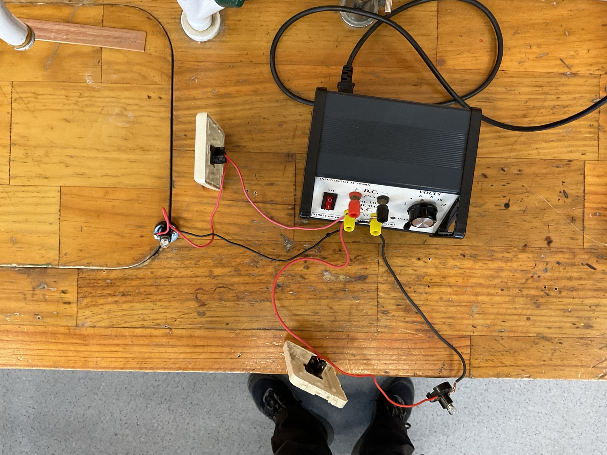
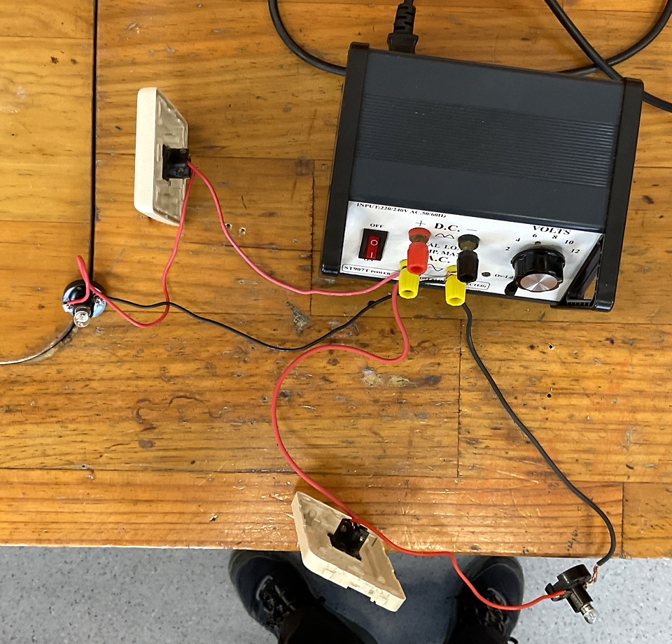
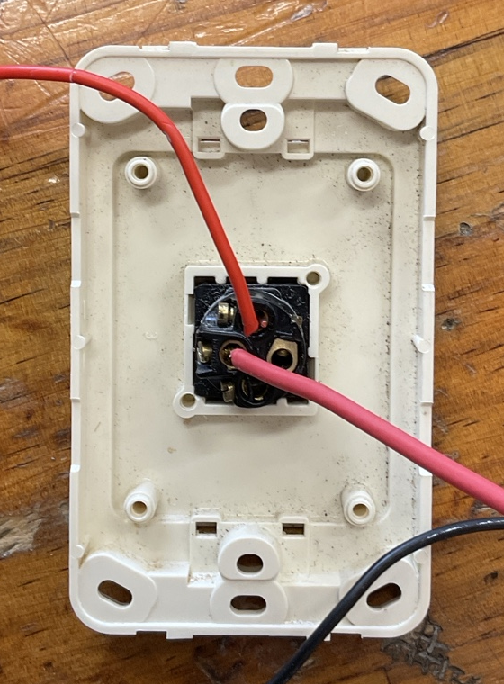

Foundations of charge and static electricity
Conceptual progression from pepeha and particle models to explaining static electricity, with reflection on unfinished written work.
Read lesson planProfessional Experience 1
Lesson sequences, delivery and evidence.
Follow each class from planning through delivery and evidence. Dates and delivery statuses come from the Learning Events Register. Lesson plans and presentations are working documents that evolve with teaching experience.
Lessons are numbered consecutively within each class’s teaching sequence. Dates and topics show how each class progressed. Planned lessons are clearly marked. Original resource numbering is retained in source documents and the Learning Events Register.
Each completed event is counted once. Full lessons include cover lessons. Other group activities include Science Club and assessment/EOTC sessions.
6 planned events, excluded from the completed total. View the learning events register.
Three selected plans illustrating a range of teaching approaches. Delivery status is shown for each.
Conceptual progression from pepeha and particle models to explaining static electricity, with reflection on unfinished written work.
Read lesson planAn investigation of independently switched parallel lamp branches, practical checking and electrical-protection reasoning.
Read lesson planAn open-ended design assessment requiring circuit planning, testing, troubleshooting and evidence-based explanation.
Read lesson planThe initial unit overview records the starting plan. The lesson tables and class-specific plans below reflect subsequent revisions as teaching progresses.
Read original unit overviewLesson sequence with planned or recorded delivery, supporting resources and evidence.
| Lesson | Date / status | Plan | Slides | Worksheet | Evidence |
|---|---|---|---|---|---|
| Lesson 01Introduction to electricity and charge | Completed14 Oct 2026 | Plan | Slides | — | |
| Lesson 02Energy supply and two-switch circuit challenges | Completed21 Oct 2026 | Plan | Slides | Quick check | |
| Lesson 03Current and its measurement | Completed23 Oct 2026 | Plan | Slides | — | |
| Lesson 04Voltage, current and resistance | Completed28 Oct 2026 | Plan | Slides | Crossword · Investigation | |
| Lesson 05Resistance and current | Completed30 Oct 2026 | Plan | Slides | Investigation, continued | |
| Lesson 06Reliable connections and switched outlets | Completed4 Nov 2026 | Plan | Slides | Connection worksheet | |
| Lesson 07Independently switched parallel lamps and electrical protection Selected | Completed6 Nov 2026 | Plan | Slides | Switching worksheet |  Completed-circuit photograph |
| Lesson 08How do we generate electricity? | Completed11 Nov 2026 | Plan | Slides | Generation stations worksheet | |
| Lesson 09Can electricity make a magnet? | Planned13 Nov 2026 | Plan | Slides | Electromagnet worksheet | |
| Lesson 10Local beach electricity-generation investigation | Planned18 Nov 2026 | Plan | Earlier slides | — | |
| Lesson 11Circuit design challenge and assessment Selected | Planned20 Nov 2026 | Plan | Slides | — |
Lesson sequence with planned or recorded delivery, supporting resources and evidence.
| Lesson | Date / status | Plan | Slides | Worksheet | Evidence |
|---|---|---|---|---|---|
| Lesson 01Introduction to electricity and charge | Completed12 Oct 2026 | Plan | Slides | — | |
| Lesson 02Foundations of charge and static electricity Selected | Completed15 Oct 2026 | Plan | Slides | Charge worksheet | |
| Lesson 03Energy supply and two-switch circuit challenges | Completed22 Oct 2026 | Plan | Slides | Quick check | |
| Lesson 04Current and its measurement | Completed29 Oct 2026 | Plan | Slides | — | |
| Lesson 05Voltage, current and resistance | Completed2 Nov 2026 | Plan | Slides | Crossword · Investigation | |
| Lesson 06Graphing demonstration and switched-outlet practical | Completed5 Nov 2026 | Plan | Slides | Connection worksheet | |
| Lesson 07Independently switched parallel lamps and electrical protection | Completed9 Nov 2026 | Plan | Slides | Connection worksheet | |
| Lesson 08Two-lamp circuit and electricity generation | Planned12 Nov 2026 | Plan | Slides | Two-lamp worksheet · Generation stations worksheet | |
| Lesson 09Comparing series and parallel circuits | Planned16 Nov 2026 | Plan | Slides | — | |
| Lesson 10Electrical energy and efficiency | Planned19 Nov 2026 | Plan | Slides | — |
Individual support, demonstrations and Science Club activities.
| Learning event | Class/group | Date/status | Planning/resources | Reflection/record |
|---|---|---|---|---|
| Standing waves on a string | Year 13 Physics | Completed23 Sep 2026 | Plan | Reflection / record |
| Design and build model boats | Primary Science Club | Completed24 Sep 2026 | Plan | Reflection / record |
| One-to-one past-paper exam preparation | Year 13 Physics | Completed14 Oct 2026 | Past-paper questions | Reflection / record |
| One-to-one exam preparation | Year 13 Physics | Completed15 Oct 2026 | NZQA AS 91526 resources | Reflection / record |
| One-to-one exam preparation | Year 13 Physics | Completed19 Oct 2026 | NZQA AS 91526 resources | Reflection / record |
| Sound interference and wavelength | Year 13 Physics | Completed2 Nov 2026 | Plan | Reflection / record |
Additional decks are retained here until their class or lesson is confirmed.
 Lesson 09: Circuit-Guide-Setup.png
Lesson 09: Circuit-Guide-Setup.png Lesson 09: Manu-Bay-Setup.png
Lesson 09: Manu-Bay-Setup.png Lesson 09: Ngarunui-Beach-Setup.png
Lesson 09: Ngarunui-Beach-Setup.png Lesson 09: Papahua-Skatepark-Setup.png
Lesson 09: Papahua-Skatepark-Setup.png
Two-lamp-circuit-completed-reference.png
Two-lamp-switch-terminals-closeup.pngThe original unit overview and earlier planning records show the development of the unit. Current class-specific plans and the delivery register take precedence.